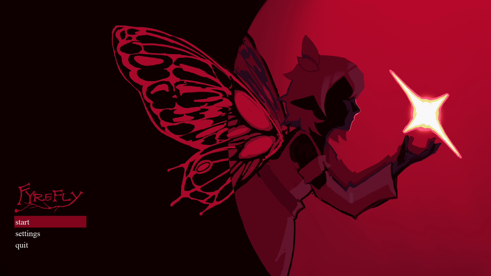
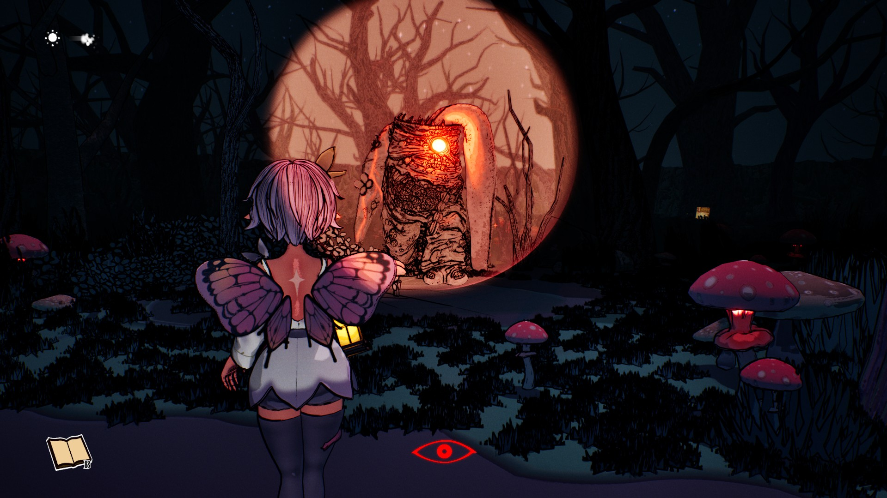

About
Hola hermanos and hermanas! Thank you for taking the time to browse my professional portfolio. While my studies are focused on game development I have equal parts love for both the game design process and coordinating team development and maximising team dynamics.
It's my belief that game development is a team game. My goal is being a multiplication for the people around me, rather than a sum of my individual parts.
Projects
FyreFly


FyreFly was my first mixed disipline, multi month long project and allowed me to both emphasis the current skill set I had acquired and continue to hone a large variety of abilities.
On this project i mainly
took on the role of mobile developer, while taking on multiple design and techincal coordinator responsibilites.
It was very much my responsibility to make sure everyone could access all functionality that they required
and be flexible enough to support all departments with both coding and non-coding difficulties.
The aspects of the project i had a major role in and personal improvement i made as a result include but are not limited to:
Contact
Email: dean@mccrimmond.org.uk